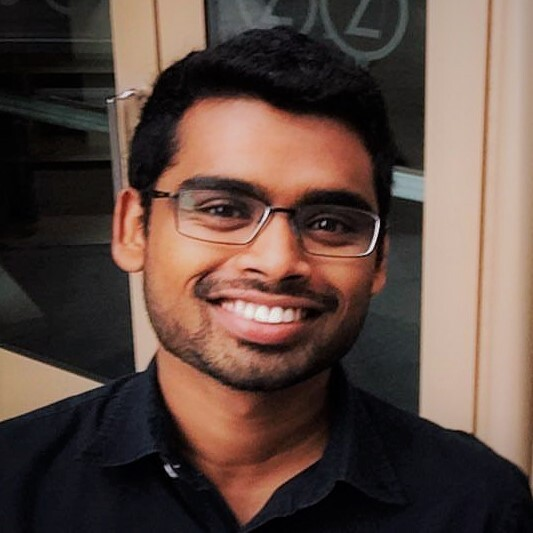

PPSN '26 Nature Inspired Computation on HPC Workshop Organizing Committee
Mark Coletti, Chair
Oak Ridge National Laboratory, USA
Mark Coletti is a research scientist with the Oak Ridge National Laboratory (ORNL), and he received his Ph.D. in Computer Science from George Mason University in 2014. His main research focus is improving understanding of evolutionary algorithms within HPC contexts, particularly in petascale and exascale environments. His technical background includes evolutionary computation, machine learning, agent-based modeling, software engineering, image processing, and geoinformatics.

Chathika Gunaratne
Oak Ridge National Laboratory, USA
Chathika Gunaratne, is a postdoctoral research associate in the Computer Science and Mathematics Division at Oak Ridge National Laboratory. Chathika's research focuses on explainable artificial intelligence and data-driven modeling and simulation of complex social systems. Chathika’s work incorporates technical aspects from evolutionary algorithms, agent-based modeling, machine learning, network analysis, and high-performance computing. Chathika earned his Ph.D. in Modeling and Simulation from the University of Central Florida in 2019, holds a M.S. in Modeling and Simulation also from UCF, and a B.Sc. in Computer Science from the University of Colombo, Sri Lanka. Chathika’s previous appointments include positions at Massachusetts Institute of Technology Computer Science and Artificial Intelligence Lab (MIT CSAIL), NBC Universal Studios, and SimCentric Technologies.
